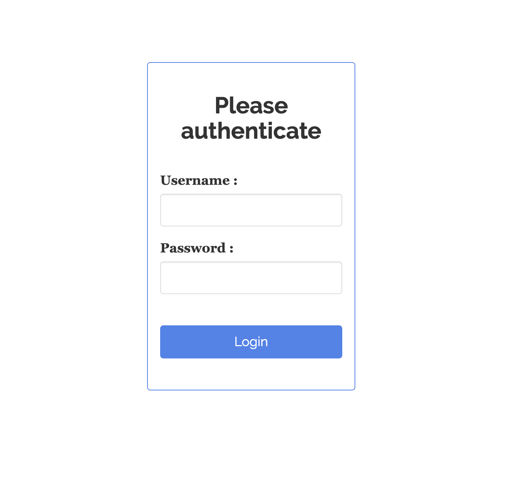
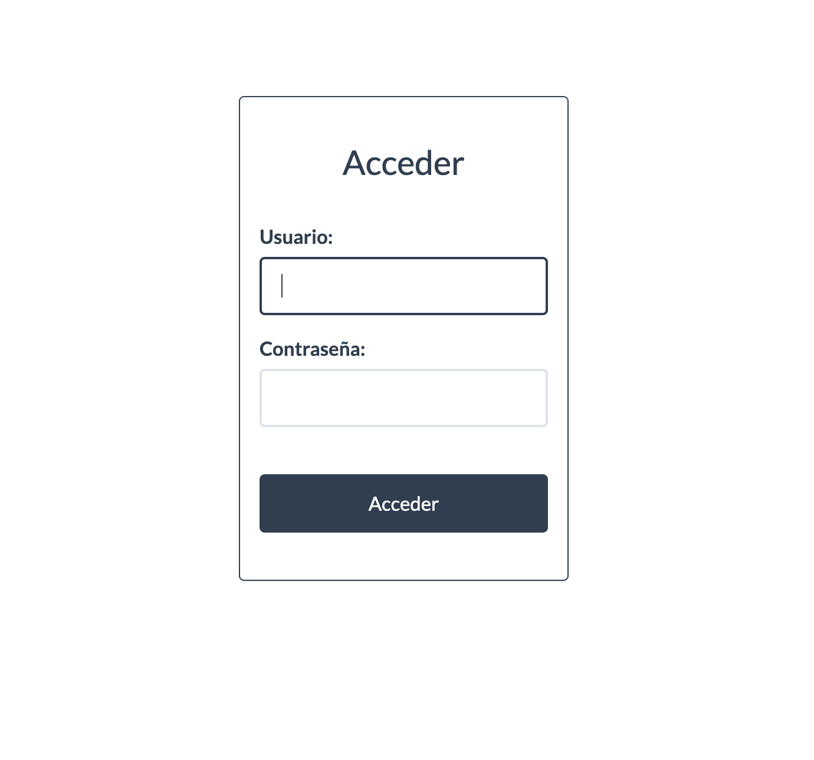

Protege el acceso a tus aplicaciones Shiny con contraseña
17/2/2025
Si creaste una aplicación Shiny y quieres compartirla con otros/as, pero tu app contiene información que no puede ser vista por cualquiera, ¡entonces sigue estos pasos! En unos minutos tendrás una aplicación que requiere de usuario y contraseña para poder usarla.
Publicaciones relacionadas

Instalar {shinymanager}
Instala el
paquete {shinymanager} para empezar:
install.packages("shinymanager")
Crear credenciales
Dentro del script app.R de tu aplicación Shiny, crea un dataframe que contenga una contraseña de prueba:
# credenciales para autenticación
credentials <- data.frame(
user = "usuario",
password = "usuario"
)
Aplicar autenticación a tu app
Ahora, en el apartado server de tu app, agrega el siguiente código que evaluará las credenciales ingresadas y gestionará el acceso para tus usuarios:
# autenticación
res_auth <- secure_server(check_credentials = check_credentials(credentials))
Finalmente, antes de la línea de tu script app.R que ejecuta tu aplicación (usualmente shinyApp(ui, server)), modifica el objeto que contiene la interfaz de tu aplicación, para protegerla con la autenticación de {shinymanager}:
# autenticación
ui <- secure_app(ui)
¡Listo! Tu aplicación ahora solicitará una contraseña antes de ejecutarse.
Ejemplo
Veamos un ejemplo con una aplicación Shiny real:
App sin autenticación
library(shiny)
library(bslib)
ui <- page_fluid(
page_fillable(
card(
h1("Aplicación"),
sliderInput("numeros", "Prueba", 1, 10, 5)
)
)
)
server <- function(input, output, session) {
}
shinyApp(ui, server)
Para agregarle autenticación a esta app, debemos seguir los pasos anteriores para dejarla así:
App con autenticación
library(shiny)
library(bslib)
library(shinymanager)
# credenciales para autenticación
credentials <- data.frame(
user = "usuario",
password = "usuario"
)
ui <- page_fluid(
page_fillable(
card(
h1("Aplicación"),
sliderInput("numeros", "Prueba", 1, 10, 5)
)
)
)
server <- function(input, output, session) {
# autenticación
res_auth <- secure_server(check_credentials = check_credentials(credentials))
}
# autenticación
ui <- secure_app(ui)
shinyApp(ui, server)
La pantalla de autenticación se vería así:

Personalizar
Si queremos modificar la pantalla de autenticación,
podemos agregar un tema, y cambiar las etiquetas usando la función set_labels():
# definir un tema
ui <- secure_app(theme = shinythemes::shinytheme("flatly"), ui)
# cambiar textos de autenticación
set_labels(language = "en",
"Please authenticate" = "Acceder",
"Username:" = "Usuario:",
"Password:" = "Contraseña:",
"Login" = "Acceder"
)

La aplicación y todos sus contenidos han quedado protegidos tras la contraseña de usuario. El siguiente paso es guardar las contraseñas en un archivo (no en el código) que no se suba a GitHub (agregar a .gitignore), y que ojalá esté encriptado. Por ejemplo, {shinymanager} ofrece formas de
guardar las credenciales en una base de datos SQlite, con encripción y hashing de las contraseñas.
Para más información sobre el uso de {shinymanager},
consulta su documentación.
Publicaciones sobre shiny